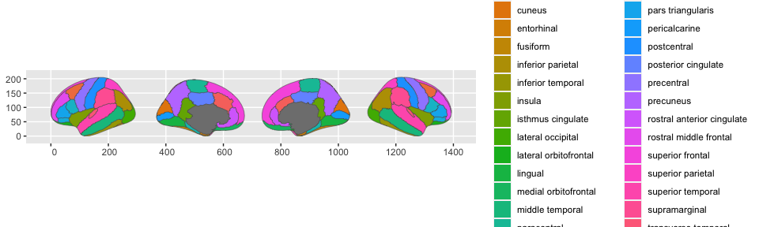
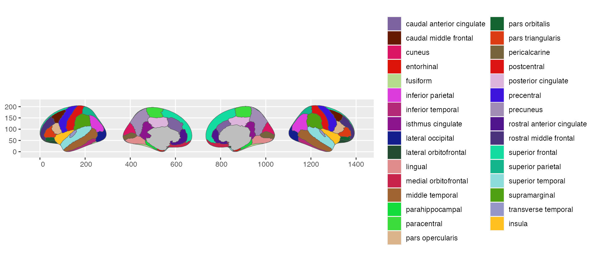
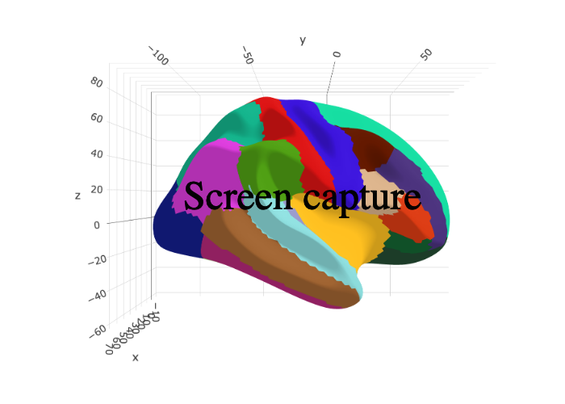

Using the ggseExtra package requires the two main ggseg-packages, containing the functions needed to plot the data. ggsegExtra is a meta-repository of data-sets that fit with the functions in those main packages, with functions to help you create your own custom atlases.
library(ggsegExtra)
## Loading required package: ggseg
## Loading required package: ggplot2
## Loading required package: ggseg3d
## Warning in rgl.init(initValue, onlyNULL): RGL: unable to open X11 display
## Warning: 'rgl.init' failed, running with 'rgl.useNULL = TRUE'.
## Registered S3 methods overwritten by 'stars':
## method from
## st_bbox.SpatRaster sf
## st_crs.SpatRaster sfInstalling atlases
Atlases are stored in their own online repositories. The list of repositories is periodically updated based on when we have confirmed a new atlas that works with the packages. These data-sets can be in our own github account (ggseg), and we are happy to add new repositories contributed by others here. To see all confirmed atlases:
ggseg_atlas_repos()
## opening url input connection.
##
Found 21 records...
Imported 21 records. Simplifying...
## closing url input connection.
## # A tibble: 21 × 31
## Package Title Version `Authors@R` Description License Encoding RoxygenNote
## <chr> <chr> <chr> <chr> <chr> <chr> <chr> <chr>
## 1 ggsegIca ica d… 0.0.1 "c(person(… "This is a… MIT + … UTF-8 7.1.1
## 2 ggsegAr… arsla… 0.0.1 "c(person(… "This is a… MIT + … UTF-8 7.1.1
## 3 ggsegGo… gordo… 0.0.1 "c(person(… "This is a… MIT + … UTF-8 7.1.1
## 4 ggsegAi… aicha… 0.0.1 "c(person(… "This is a… MIT + … UTF-8 7.1.1
## 5 ggsegAal aal d… 0.0.1 "c(person(… "This is a… MIT + … UTF-8 7.1.1
## 6 ggsegPo… power… 0.0.1 "c(person(… "This is a… MIT + … UTF-8 7.1.1
## 7 ggsegBr… Brain… 0.0.1 "c(person(… "This is a… MIT + … UTF-8 7.1.1
## 8 ggsegJHU JHU d… 1.0.1.0… "c(person(… "This is a… MIT + … UTF-8 7.1.1
## 9 ggsegHO Harva… 1.0.2.0… "c(person(… "This is a… MIT + … UTF-8 7.1.1
## 10 ggsegIC… ICBM … 1.0.0 "c(person(… "This is a… MIT + … UTF-8 7.1.0
## # … with 11 more rows, and 23 more variables: LazyData <chr>,
## # LazyDataCompression <chr>, VignetteBuilder <chr>, Repository <chr>,
## # RemoteUrl <chr>, RemoteRef <chr>, RemoteSha <chr>, NeedsCompilation <chr>,
## # Packaged <chr>, Author <chr>, Maintainer <chr>, _user <chr>, _file <chr>,
## # _published <chr>, _builder <df[,13]>, MD5sum <chr>, _hard_deps <list>,
## # _soft_deps <list>, Remotes <list>, URL <chr>, BugReports <chr>,
## # Language <chr>, SystemRequirements <chr>
# Search for repos with pattern
ggseg_atlas_repos("Yeo")
## opening url input connection.
##
Found 21 records...
Imported 21 records. Simplifying...
## closing url input connection.
## # A tibble: 1 × 31
## Package Title Version `Authors@R` Description License Encoding RoxygenNote
## <chr> <chr> <chr> <chr> <chr> <chr> <chr> <chr>
## 1 ggsegYeo2011 Yeo … 1.0.2.… "c(person(… "This is a… MIT + … UTF-8 7.1.1
## # … with 23 more variables: LazyData <chr>, LazyDataCompression <chr>,
## # VignetteBuilder <chr>, Repository <chr>, RemoteUrl <chr>, RemoteRef <chr>,
## # RemoteSha <chr>, NeedsCompilation <chr>, Packaged <chr>, Author <chr>,
## # Maintainer <chr>, _user <chr>, _file <chr>, _published <chr>,
## # _builder <df[,13]>, MD5sum <chr>, _hard_deps <list>, _soft_deps <list>,
## # Remotes <list>, URL <chr>, BugReports <chr>, Language <chr>,
## # SystemRequirements <chr>
# Search is case-sensitive
ggseg_atlas_repos("yeo")
## opening url input connection.
##
Found 21 records...
Imported 21 records. Simplifying...
## closing url input connection.
## # A tibble: 0 × 31
## # … with 31 variables: Package <chr>, Title <chr>, Version <chr>,
## # Authors@R <chr>, Description <chr>, License <chr>, Encoding <chr>,
## # RoxygenNote <chr>, LazyData <chr>, LazyDataCompression <chr>,
## # VignetteBuilder <chr>, Repository <chr>, RemoteUrl <chr>, RemoteRef <chr>,
## # RemoteSha <chr>, NeedsCompilation <chr>, Packaged <chr>, Author <chr>,
## # Maintainer <chr>, _user <chr>, _file <chr>, _published <chr>,
## # _builder <df[,13]>, MD5sum <chr>, _hard_deps <list>, _soft_deps <list>, …
# Search is case-sensitive, but this can be fixed
ggseg_atlas_repos("yeo", ignore.case = TRUE)
## opening url input connection.
##
Found 21 records...
Imported 21 records. Simplifying...
## closing url input connection.
## # A tibble: 1 × 31
## Package Title Version `Authors@R` Description License Encoding RoxygenNote
## <chr> <chr> <chr> <chr> <chr> <chr> <chr> <chr>
## 1 ggsegYeo2011 Yeo … 1.0.2.… "c(person(… "This is a… MIT + … UTF-8 7.1.1
## # … with 23 more variables: LazyData <chr>, LazyDataCompression <chr>,
## # VignetteBuilder <chr>, Repository <chr>, RemoteUrl <chr>, RemoteRef <chr>,
## # RemoteSha <chr>, NeedsCompilation <chr>, Packaged <chr>, Author <chr>,
## # Maintainer <chr>, _user <chr>, _file <chr>, _published <chr>,
## # _builder <df[,13]>, MD5sum <chr>, _hard_deps <list>, _soft_deps <list>,
## # Remotes <list>, URL <chr>, BugReports <chr>, Language <chr>,
## # SystemRequirements <chr>Installing atlases from the repos, we have convenience function, using the r-universe for all the ggseg packages
repo <- ggseg_atlas_repos("dkt", ignore.case = TRUE)
##
Found 21 records...
Imported 21 records. Simplifying...
if (!requireNamespace("ggsegDKT", quietly = TRUE)) {
install_ggseg_atlas(repo$package)
}
2d atlases with ggseg
You should be able to easily switch the atlases, after loading ggsegExtra, so rather plot one of the ggsegExtra atlases directly to the function.
library(ggplot2)
library(ggseg)
# load on all atlases and palettes from the ggsegYeo2011 library
library(ggsegDKT)
ggplot() +
geom_brain(atlas = dkt)
If you want to make sure it looks properly like the atlas you are after, or you want to plot an example of the original plot. Most of the datasets also have corresponding palettes from the papers they were introduced from. These colour-scales can be applied through the scale_X_brain functions, and you must also specify which package the palette comes from.
ggplot() +
geom_brain(atlas = dkt) +
scale_fill_brain("dkt", package="ggsegDKT")
3d plots with ggseg3d
The same goes for ggseg3d, the new atlases, now available through the ggsegExtra package, can be plotted with the ggseg3d function and its helpers.
library(ggseg3d)
ggseg3d(atlas = dkt_3d) %>%
pan_camera("right lateral")